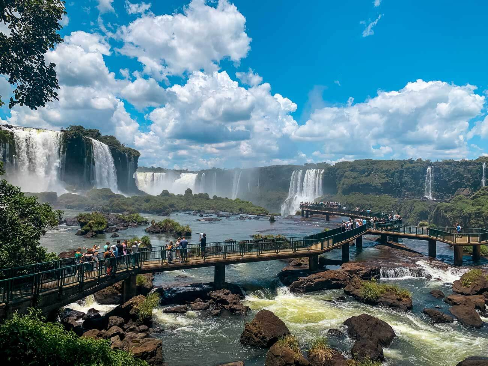
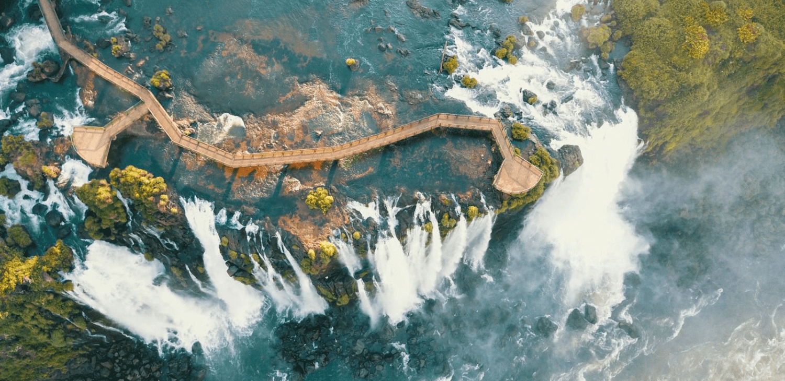
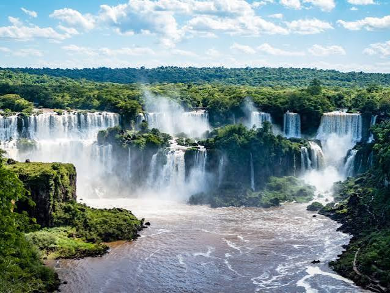
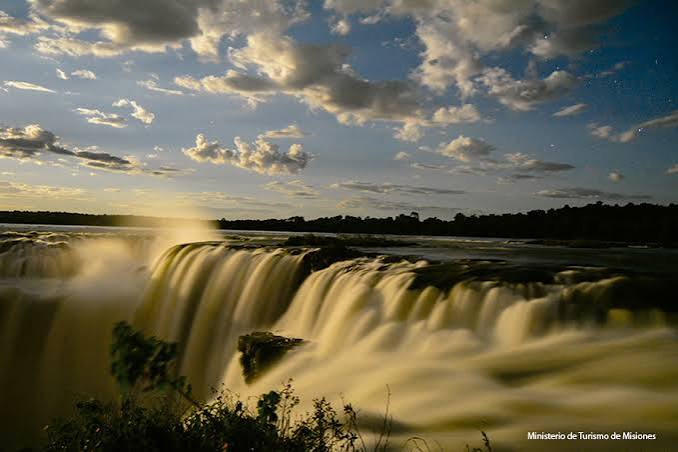

Curiosidades das cataratas do iguaçu
As Cataratas do Iguaçu impressionam por sua magnitude monumental, sendo consideradas o maior sistema de quedas d'água do mundo em termos de extensão linear, com um paredão que se estende por quase três quilômetros ao longo da fronteira entre o Brasil e a Argentina. Esse complexo colossal despeja uma vazão média extraordinária de 1,5 milhão de litros de água por segundo, volume que se multiplica de forma impressionante em épocas de cheia histórica, transformando o local em uma força da natureza imbatível que supera em largura as Cataratas de Niágara e rivaliza diretamente com as Cataratas de Vitória, na África. O coração geográfico e o ponto mais espetacular de toda essa estrutura é a Garganta do Diabo, um abismo em formato de "U" com mais de 80 metros de altura onde o impacto violento das águas gera um estrondo ensurdecedor audível a quilômetros de distância, erguendo uma imensa cortina de névoa que alimenta continuamente a rica biodiversidade da floresta tropical ao redor, hoje protegida como Patrimônio Mundial pela UNESCO.

O Resgate da Maravilha: Como Santos Dumont Tornou as Cataratas do Iguaçu Públicas
A história das Cataratas do Iguaçu ganhou seu capítulo mais decisivo em 1916, graças à intervenção direta de Santos Dumont. Ao visitar a região, o inventor ficou fascinado com a beleza das quedas, mas indignado ao descobrir que toda aquela área imponente pertencia a um fazendeiro uruguaio, que cobrava taxas de quem quisesse contemplar o local. Determinado a mudar aquela situação e transformar as cataratas em um patrimônio de todos, Dumont enfrentou uma jornada de seis dias a cavalo pela mata fechada até Curitiba para se reunir com o então presidente do estado do Paraná, Affonso Camargo. Sua enorme influência e prestígio internacional foram fundamentais para convencer o governo a desapropriar as terras por decreto ainda naquele ano, plantando a semente para a criação oficial do Parque Nacional do Iguaçu em 1939, garantindo que essa riqueza natural permanecesse pública e acessível para a humanidade.

Reflexos da Queda: O Impacto das Cataratas do Iguaçu nas Artes Visuais e na Literatura
As Cataratas do Iguaçu exercem um fascínio magnético sobre a expressão artística, atuando como uma musa viva que desafia pintores, fotógrafos e escritores a traduzirem sua força monumental. Na pintura, artistas pioneiros como o francês Jean-Baptiste Debret e o brasileiro Alphonse de Taunay dedicaram pinceladas detalhadas para registrar a imponência selvagem das quedas no século XIX, enquanto a literatura de viagem de cronistas internacionais tentava capturar em palavras o som ensurdecedor e a névoa mística da Garganta do Diabo. Esse impacto estético se expandiu para a modernidade, transformando o complexo em um cenário cinematográfico disputado por grandes produções de Hollywood — como o clássico filme A Missão (1986) e blockbusters como Pantera Negra e Indiana Jones —, onde a monumentalidade das águas deixa de ser apenas uma paisagem de fundo e passa a carregar o simbolismo do sublime, do sagrado e do indomável na cultura visual global.
Memória e patrimônio>
Imagens em Memoria do litoral Paranaense.


Curiosidade>
Curiosidade 1
Foz do Iguaçu é um dos destinos mais multiculturais do planeta e abriga uma das sete maravilhas naturais do mundo. O próprio nome da cidade revela sua essência: "Foz" indica onde um rio deságua, e "Iguaçu" vem do tupi-guarani significando "Água Grande"
Curiosidade 2
Foz do Iguaçu esconde detalhes históricos fascinantes e recordes mundiais curiosos que vão além da grandiosidade de suas águas e de sua engenharia.